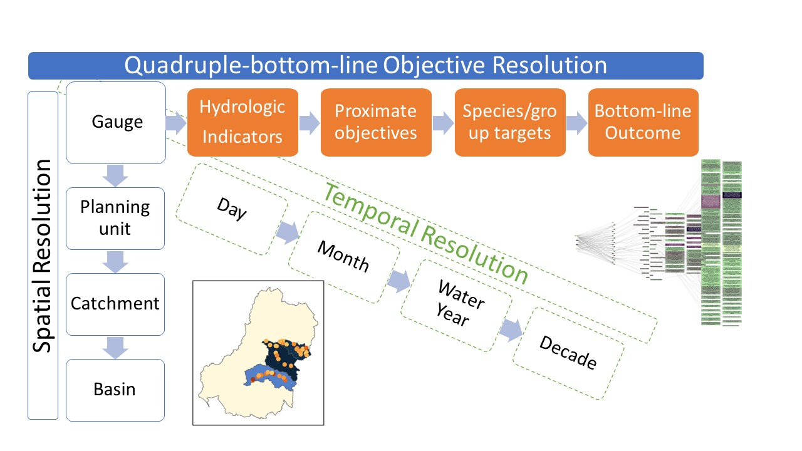

Aggregation overview
Goals
Incoming data from modules is typically very granular in many dimensions (as it should be if the modules are modelling data near the scale of processes). However, this means that there are thousands of different outcomes across the basin and through time. To make that useful for anything other than targeted local planning, we need to aggregate. Here, we aggregate along three dimensions- space, time, and ‘Objective’, where ‘Objective’ is the axis along increasing organisational levels, for example flow requirements for fish spawning to fish spawning to fish populations to overall environmental success.
We want to be able to aggregate along each of these dimensions with any number of aggregation functions (e.g. mean, min, max, more complex) to reflect the processes being aggregated. These should be factorial- if we aggregate with min and max at step 2 (generating two columns of aggregated data), then each of those columns should be aggregated according to the step-3 aggregation, and so on.
We want to be able to interleave the dimensions, e.g. aggregate along the Objective dimension to some intermediate level, then aggregate in space, then time, then more Objective levels, then more time and more space.
To achieve this, we have developed a flexible set of aggregation functions that take a list of aggregation steps, each of which can be along any dimension, and a matching list of aggregation functions to apply to that step in the aggregation. It is possible to ask for multiple functions per step.

Tracking
In general, aggregation over many steps can get quite complicated to track, particularly if some of the steps have multiple aggregation functions. Tracking the provenance of the final values is therefore critical to understand their meaning. By default, columns of values are named in a way that tracks their provenance, e.g. step_function_step_function_originalName. This is memory-friendly but ugly, and so we can also stack this information into columns (two for each step- one the step, the second the function) with the agg_names_to_cols function.
Further, in the case of a multi-step aggregation, we can either save only the final output (better for memory) or save the entire stepwise procedure, which can be very useful both for investigating results and visualisation, and it is often the case that we want to ask questions of several levels anyway.
User inputs
The user potentially has control over a number of decisions for the aggregation-
Sequencing in multiple dimensions
Aggregation function(s) to apply at each step
Data to aggregate (one or more columns)
Any desired groupings to retain
Various others related primarily to data format (tracking format, saving each aggregation step, retention of NA spatial units, etc)
Many of these can be specified in a number of ways. I have tried to demonstrate a number of these capabilities and options in the spatial and theme notebooks, while keeping to simpler, more typical uses in the interleaved example and the full toolkit. Some of the most useful, but also trickiest, capabilities revolve around being able to format the groupers and aggregation columns as bare names, character vectors, or tidyselect syntax, and the functions as single or multiple at each step, defined as bare names, characters, or lists with arguments. These approaches make the functions highly general and flexible to new datasets (and sequential aggregation) and custom aggregation functions.
The other powerful user input is the foundation of the multidimensional aggregator- the sequencing lists. These are demonstrated in all the notebooks, but are perhaps most interesting in the interleaved version. By default, only the final output is retained, but saveintermediate = TRUE saves a list of each step, which can be very useful.
The data itself and output data are also controlled by the user (by necessity). For inputs, multi_aggregate expects the incoming data to be in memory. There is also a wrapper read_and_agg that takes paths as arguments and does the read-in of the data internally and then runs multi_aggregate. This is often a useful approach, allowing parallelisation, better memory management, and it is far easier to use paths in a config file of arguments. Outputs from multi_aggregate are R objects- a dataframe or a list- and are returned back to the calling environment. The read_and_agg wrapper, however, can both return R objects to the session returnList = TRUE and save to a file if savepath = "path/to/outfile" .
Arguments and use-cases
We show the aggregation happening in multiple notebooks, spatial_agg.qmd, theme_agg.qmd, and theme_space_agg.qmd. These focus on different aspects, but there are valuable demonstrations of capacity in each. In addition to showing spatial aggregation, for example, the spatial aggregation notebook also works through a number of examples of how we can specify grouping, the columns to aggregate, and functions to use that are general across all the aggregation functions- we just use the spatial aggregation for an example. The different saveintermediate and namehistory options are demonstrated in each of those notebooks, showing how we can access the stepwise aggregations or only the final result, and ensure we know the exact meaning of each value in the output.
Limitations
At the time of development, there was no temporally resolved output data, and so temporal aggregation is not yet available. This is very high on the priority list, and the framework is in place to do it.
Different aggregation functions for different rows in the data (e.g. mean of fish breeding, min of bird foraging) are not yet available
- Multiple functions are possible per step, and different functions are possible for different steps
- Different functions for different rows *within a step* requires mapping of what those functions should be, and this does not exist. Still, the capability to do this is very high on the priority list, and should not be too difficult.Development notes
I have assumed that we primarily have point data (gauges), rather than rasters, but handling rasters is a reasonably straightforward modification (and I have the code to do it elsewhere). Because of the current focus on gauges, I’m using sf primarily, but stars could be useful depending on where we get with input formats (netcdf etc) and higher-dimension data, or if we end up using rasters.
Typically, aggregating (and some other operations) on `sf` dataframes with geometry is *much* slower than without. So I’ve put a heavy focus on safely stripping and re-adding geometry. This allows us to use dataframes that reference geometry without the geometry itself attached and only take the performance hit from geometry if it is needed.
Spatial aggregation is inherently slow because of the geometric operations (specifically sf::st_intersection) but we’ve optimized the amount of intersecting and unpicked space where possible so nothing is slowed down by being spatial unless absolutely necessary (including the actual aggregation of the spatial data). We’re doing the absolute minimum spatially-aware processing, and doing that in a way that early spatial processing does not slow down later non-spatial processing.